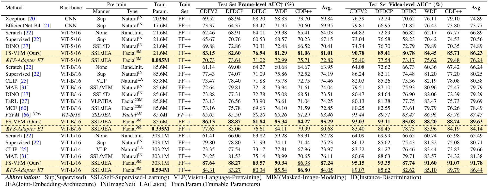
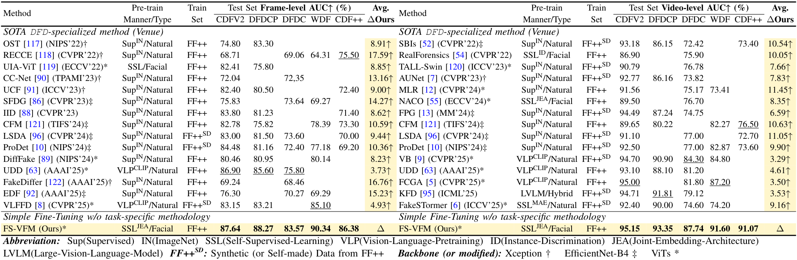
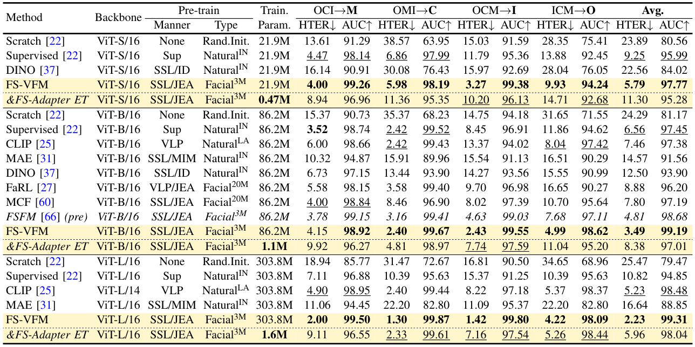
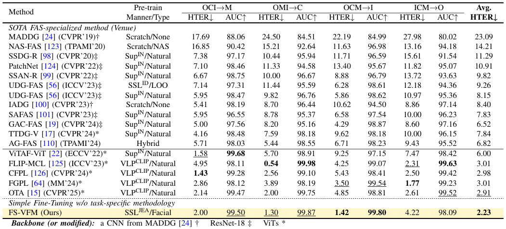
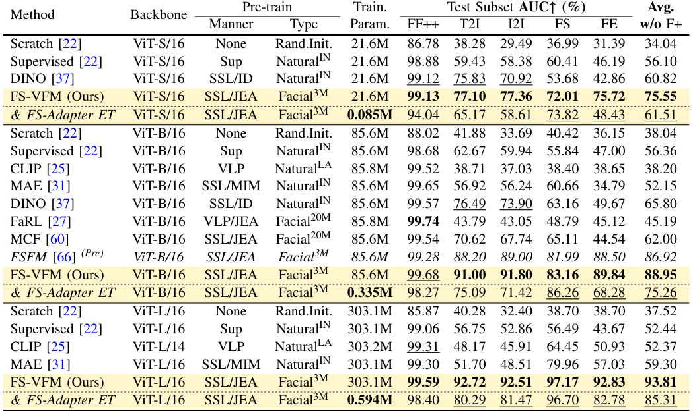

Cross-dataset evaluation of simple fine-tuning VFMs on deepfake detection. All models are fine-tuned on FF++ (c23) and tested on unseen datasets under identical settings. &FS-Adapter ET (Efficient Tuning) only updates the FS-Adapter and head, freezing the ViT backbone. Left: frame-level, Right: video-level. Best results, second-best.

Cross-dataset evaluation on deepfake detection. For a fair comparison,
results of SOTA task-specialized methods are cited from their original papers, and the results of CDF++
are from its benchmark. Avg.ΔOurs denotes the average AUC improvement of FS-VFM (Ours) over other
methods across their tested sets.
Left: frame-level, Right: video-level.
Best results, second-best.

Cross-domain evaluation of simple fine-tuning VFMs on face anti-spoofing. All models are fine-tuned under identical settings. FS-Adapter Efficient Tuning} only updates the FS-Adapter and head, freezing the ViT backbone. Best results, second-best.

Cross-domain evaluation on face anti-spoofing. The results of SOTA specialized methods are cited from their original papers. Best results, second-best.

Cross-dataset evaluation on the DiFF benchmark. All models are fine-tuned only on the FF++_DeepFakes/c23 subset. Best results, second-best.
@article{wang2024fsfm,
title={FSFM: A Generalizable Face Security Foundation Model via Self-Supervised Facial Representation Learning},
author={Wang, Gaojian and Lin, Feng and Wu, Tong and Liu, Zhenguang and Ba, Zhongjie and Ren, Kui},
journal={arXiv preprint arXiv:2412.12032},
year={2024}
}
@misc{wang2025scalablefacesecurityvision,
title={Scalable Face Security Vision Foundation Model for Deepfake, Diffusion, and Spoofing Detection},
author={Gaojian Wang and Feng Lin and Tong Wu and Zhisheng Yan and Kui Ren},
year={2025},
eprint={2510.10663},
archivePrefix={arXiv},
primaryClass={cs.CV},
url={https://arxiv.org/abs/2510.10663}
}